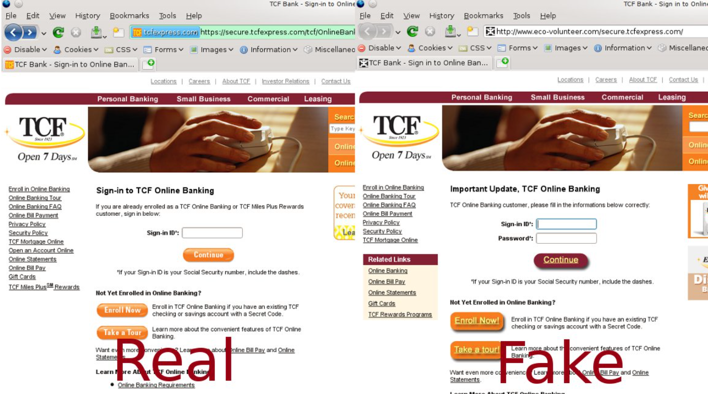

| Fake Government Officials | Identity Theft | Providing Loans or Credit Fixers | Free Prizes/Gifts or Lottery | Internet Merchandise Scams | Debt Collection |
|---|---|---|---|---|---|
| Receiving SMS from "Government Officials" asking for personal or bank details | Posing as a friend or relative in need of money | Offering "easy" loans with hidden free or false promises | Fake links that steal personal information or hack devices | Online stores that never deliver product after payment | Fake invoices claiming unpaid debts |
This is an example how to spot a fake website:
